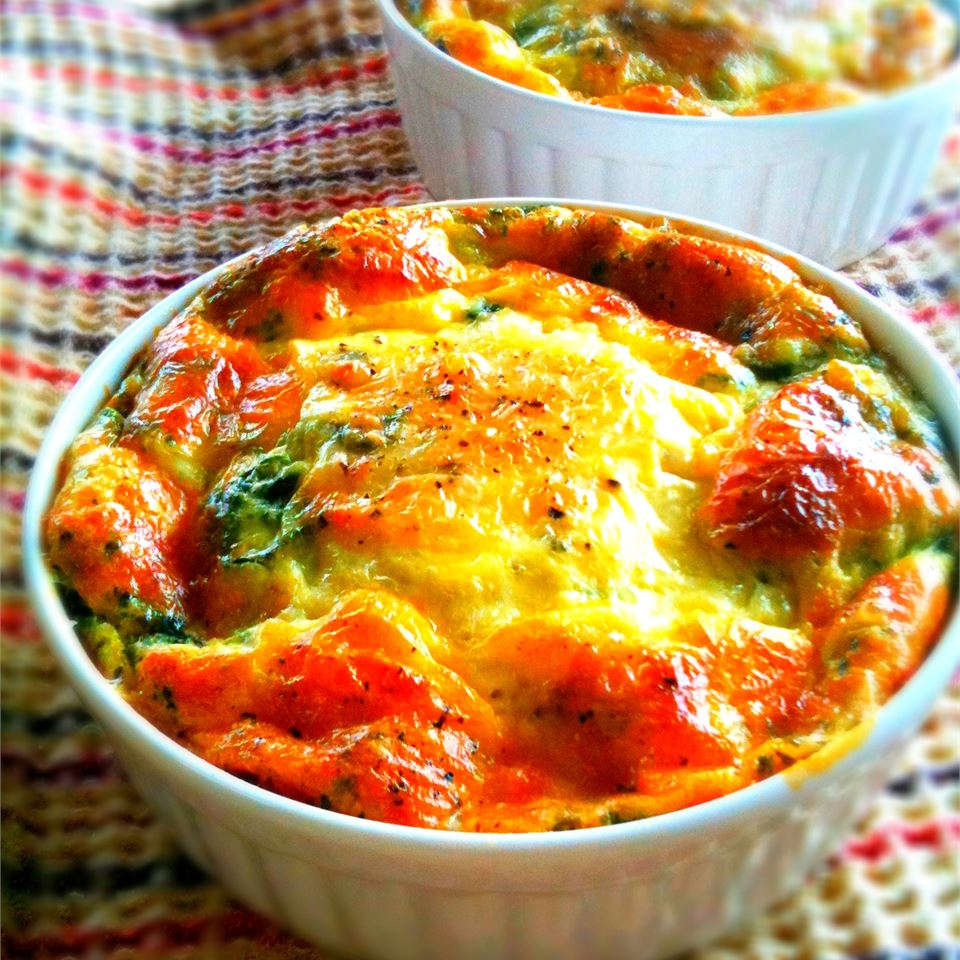

Lasagna

Description
Quick-to-fix meal using ramen instead of traditional pasta
Ingredients
- 8 slices bacon
- 4 ounces shredded Swiss cheese
- 2 tablespoons butter, melted
- 4 eggs, beaten
- ¼ cup finely chopped onion
- 1 teaspoon salt
- ½ cup all-purpose flour
- 1 ½ cups milk
Steps
- Place bacon in a large, deep skillet. Cook over medium high heat until evenly brown. Drain, crumble and set aside.
- Preheat oven to 350 degrees F (175 degrees C). Lightly grease a 9 inch pie pan.
- Line bottom of pie plate with cheese and crumbled bacon. Combine eggs, butter, onion, salt, flour and milk; whisk together until smooth; pour into pie pan.
- Bake in preheated oven for 35 minutes, until set. Serve hot or cold.